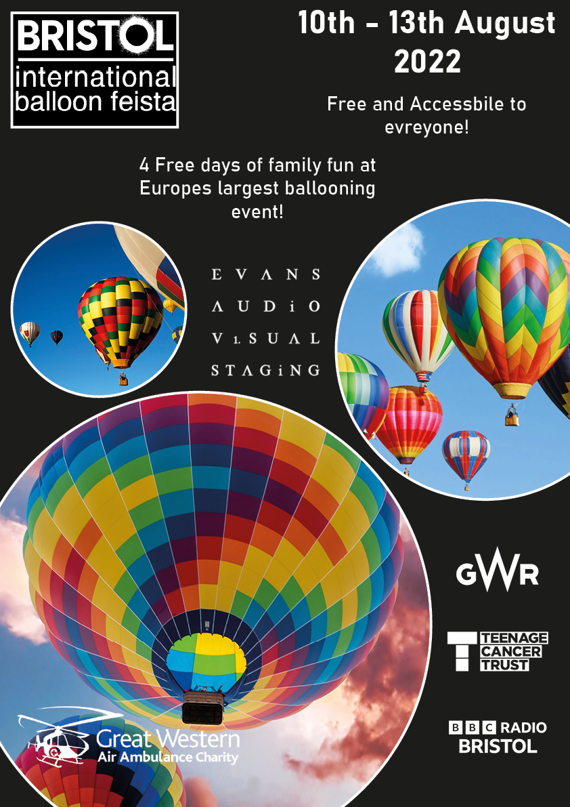

This is my first poster design, I wanted to start off with a straightforward design and get more complex as I go on introducing more shapes along the way. Although this poster's colour scheme is basic and does not evoke emotion, I find the black and blue image contrasts well and gives a clean feel. If I were to remake this poster, I would like to play around with different colour schemes to give it more emotion to fit the event more suitably, for example give it a more playful feel as it is a family event.
The layout of the text is simple and easy to read ensuring that it is accessible for all. The white contrasts with the black background making it clear and concise. The date of the event is bold and large, the reason for this is to catch people's eyes and draw them in. The logos of the sponsors are placed in visible locations ensuring that they can be seen and known by the reader that they are sponsoring the event.
The font for the text is basic. If I were to do this again, I would put more time and effort into looking for a more suitable font that really catches the eye. Overall, I do not think I am particularly happy with how this poster turned out as I could have done so much more and explored different colour themes to really make the poster pop.

Poster 2
This is my second poster design, what I wanted to do with this poster was explore the ellipse shape and use it to create a rising bubble effect. What I mean by this is varying sizes of ellipse going in an upwards direction, also giving off the look of hot air balloons rising. I feel although I have completed this to some extent as it captures that bubble effect but does not show them rising as much as I wish it did. If I were to attempt this again, I would try to capture the rising effect more by using more ellipse for example.
The problem with this poster is that the layout is confusing and comes across as random. This does not give a professional feel to the poster, making it look untrustworthy for a family event or not viewed as something worth going to. The position of the text should be more organised and bold to catch readers' eyes and get them interested, but this poster's text positioning fails at that.
The layout of the logos also feels random and not calculated, also making it look unprofessional. The colour scheme looks clean with the brightness of the images contrasting the dark background. This makes the images of the balloons the centerpiece of the poster, ensuring that anyone glancing at the poster understands what it is about. Overall, this poster is better than the first one as I feel as though it is more creative and has a cleaner finish. If I were to make changes, I would change the layout and typography of the text to something more creative and professional.
Final Poster
For my final poster I wanted to ensure there is little to no blank space, while preventing it from being overcrowded. I feel as though I achieved this by filling blank space with pink shapes that hold content. These pink shapes give the poster a sharp and professional look, while the pink contrasts with the dark background perfectly. The colours of the balloons in the images also work well with these pink shapes.
I really like the layout of the rotated squares in the middle of the page, these act as perfect holders for images allowing me to professionally highlight the event and what type of event it is. I decided to put one of the squares at the bottom of the page even though it gets cut off by the boundaries of the page. But I view this as a positive thing as it looks clean and fills up the blank space perfectly, it shows enough of the image so the reader can understand what it is while wanting more.
The layout of text and logos of the sponsors works perfectly in this poster, there is no sense of randomness, it all looks carefully planned out and placed where it should be. The logos and text are clear and visible while not being too cramped together. The date of the event is bold and placed right at the top of the poster where most people would first look, this ensures they know when the event is and makes them more likely to remember.
Overall, I feel like this is the best poster out of the three due to it having a better design and layout. The only thing I would change is I would explore different types of typography and how I could potentially use them in the design of this poster.